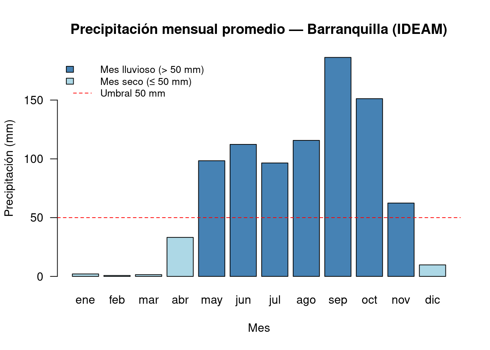
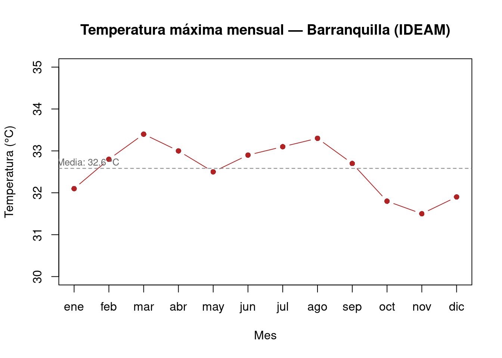

# Verificamos la versión de R — necesitamos 4.1 o superior para el pipe nativo |>
R.version.string[1] "R version 4.5.3 (2026-03-11)"Sintaxis básica, tipos de datos y vectores con datos climatológicos del Atlántico
Curso 20953 · Análisis de Datos Biológicos bajo R
8 de abril de 2026
Unidad 1: Introducción a la Ciencia de Datos en Biología · Estrategia: Clase magistral + Live coding · Duración estimada: 90 minutos
Al finalizar esta sesión, el estudiante será capaz de:
Esta semana trabajamos exclusivamente con R base — sin paquetes externos — para construir una base sólida antes de incorporar el ecosistema Tidyverse.
[1] "R version 4.5.3 (2026-03-11)"¿Por qué R ≥ 4.1? A partir de esa versión está disponible el operador pipe nativo
|>, que usaremos a partir de la Semana 4.
R es un lenguaje de programación estadístico de código abierto que nació en los años 90 como implementación libre del lenguaje S (Bell Labs). Hoy es el estándar en:
La consola de R funciona como una calculadora muy poderosa:
[1] 4[1] 3.333333[1] 3[1] 1[1] 256Pregunta para el grupo: ¿En qué situación de laboratorio o campo usaría una potencia de 2 o un logaritmo? (Pista: abundancias, pH, decibeles)
En R casi todo es un objeto. Se crean con el operador <- (también funciona =, pero <- es la convención):
temperatura_media <- 28.4 # temp. media anual en Barranquilla (°C) — IDEAM
precipitacion_anual <- 922 # precip. media anual en Barranquilla (mm) — IDEAM
nombre_estacion <- "Ernesto Cortissoz" # nombre de la estación meteorológica
es_costera <- TRUE # la estación está en zona costera
# Imprimimos los objetos escribiendo su nombre:
temperatura_media[1] 28.4[1] 922[1] "Ernesto Cortissoz"[1] TRUE[1] "es_costera" "nombre_estacion" "precipitacion_anual"
[4] "temperatura_media" ¿Qué diferencia hay entre los cuatro objetos? Uno es decimal, otro entero, uno texto entre comillas, otro una palabra sin comillas. Esa diferencia define el tipo de dato.
R tiene cinco tipos atómicos. Los más usados en biología:
temporada <- factor(c("seca", "lluviosa", "seca", "lluviosa"),
levels = c("seca", "lluviosa"))
# Los factores son cruciales para modelos estadísticos y gráficos
class(temporada)[1] "factor"[1] "seca" "lluviosa"Si intentamos sumar un número con texto, R genera un error:
Esto ocurre cuando una columna que debería ser numérica se importó como character (por ejemplo, si el CSV usaba coma como separador decimal en lugar de punto).
Un vector es una secuencia de elementos del mismo tipo. c() significa “combinar” — es la función más usada en R base.
# Temperaturas máximas mensuales en Barranquilla (°C) — IDEAM
# Orden: ene, feb, mar, abr, may, jun, jul, ago, sep, oct, nov, dic
temp_max_mensual <- c(32.1, 32.8, 33.4, 33.0, 32.5, 32.9, 33.1, 33.3, 32.7, 31.8, 31.5, 31.9)
# Precipitación mensual promedio en Barranquilla (mm) — IDEAM
precip_mensual <- c(2.1, 0.8, 1.5, 33.2, 98.4, 112.3, 96.5, 115.7, 186.3, 151.2, 62.4, 9.8)
# Nombres de los meses
meses <- c("ene", "feb", "mar", "abr", "may", "jun",
"jul", "ago", "sep", "oct", "nov", "dic")[1] 12[1] 870.2[1] 32.58333[1] 186.3[1] 0.8R empieza a contar desde 1, no desde 0 (a diferencia de Python o C).
sep
186.3 Pregunta: ¿En qué meses se concentran las lluvias en el Atlántico? ¿Cómo relacionamos ese patrón con la fenología de plantas o aves?
Una de las mayores ventajas de R: las operaciones se aplican a todos los elementos simultáneamente, sin necesidad de bucles.
ene feb mar abr may jun jul ago sep oct nov dic
0.21 0.08 0.15 3.32 9.84 11.23 9.65 11.57 18.63 15.12 6.24 0.98 ene feb mar abr may jun jul ago sep oct nov dic
FALSE FALSE FALSE FALSE FALSE TRUE FALSE TRUE TRUE TRUE FALSE FALSE [1] "jun" "ago" "sep" "oct"# Anomalía de temperatura respecto al promedio anual:
anomalia_temp <- temp_max_mensual - mean(temp_max_mensual)
round(anomalia_temp, 2) [1] -0.48 0.22 0.82 0.42 -0.08 0.32 0.52 0.72 0.12 -0.78 -1.08 -0.68set.seed(2025) # fijamos semilla para reproducibilidad
estaciones <- c("Barranquilla Ernesto Cortissoz", "Puerto Colombia",
"Sabanalarga", "Palmar de Varela", "Malambo")
# Temperatura media anual por estación (°C)
temp_media_estaciones <- c(27.8, 27.2, 26.9, 28.1, 28.4)
names(temp_media_estaciones) <- estaciones
# Precipitación anual total por estación (mm)
precip_total_estaciones <- c(922, 875, 1050, 980, 895)
names(precip_total_estaciones) <- estaciones
# Resumen climático:
cat("=== RESUMEN CLIMÁTICO — ESTACIONES IDEAM, ATLÁNTICO ===\n")=== RESUMEN CLIMÁTICO — ESTACIONES IDEAM, ATLÁNTICO ===cat("Temperatura media más alta:", max(temp_media_estaciones), "°C —",
names(which.max(temp_media_estaciones)), "\n")Temperatura media más alta: 28.4 °C — Malambo cat("Temperatura media más baja:", min(temp_media_estaciones), "°C —",
names(which.min(temp_media_estaciones)), "\n")Temperatura media más baja: 26.9 °C — Sabanalarga cat("Estación más lluviosa:", names(which.max(precip_total_estaciones)),
"con", max(precip_total_estaciones), "mm/año\n")Estación más lluviosa: Sabanalarga con 1050 mm/añocat("Rango de precipitación:", max(precip_total_estaciones) - min(precip_total_estaciones),
"mm entre la más y la menos lluviosa\n")Rango de precipitación: 175 mm entre la más y la menos lluviosa¿Por qué Sabanalarga recibe más lluvia que las estaciones costeras? ¿Qué factores geográficos explican esa diferencia?
R base tiene funciones gráficas simples, útiles para exploración rápida. En la Semana 6 usaremos ggplot2 para gráficos publicables.
barplot(
precip_mensual,
names.arg = meses,
main = "Precipitación mensual promedio — Barranquilla (IDEAM)",
xlab = "Mes",
ylab = "Precipitación (mm)",
col = ifelse(precip_mensual > 50, "steelblue", "lightblue"),
las = 1 # etiquetas del eje x horizontales
)
# Línea de referencia en 50 mm:
abline(h = 50, lty = 2, col = "red")
legend("topleft",
legend = c("Mes lluvioso (> 50 mm)", "Mes seco (≤ 50 mm)", "Umbral 50 mm"),
fill = c("steelblue", "lightblue", NA),
lty = c(NA, NA, 2),
col = c(NA, NA, "red"),
border = c("black", "black", NA),
bty = "n", cex = 0.85)
plot(
1:12, temp_max_mensual,
type = "b",
pch = 16,
col = "firebrick",
main = "Temperatura máxima mensual — Barranquilla (IDEAM)",
xlab = "Mes",
ylab = "Temperatura (°C)",
xaxt = "n",
ylim = c(30, 35)
)
axis(1, at = 1:12, labels = meses)
abline(h = mean(temp_max_mensual), lty = 2, col = "gray50")
text(0.5, mean(temp_max_mensual) + 0.15,
paste("Media:", round(mean(temp_max_mensual), 1), "°C"),
cex = 0.8, col = "gray40", adj = 0)
Tiempo: 10 minutos de trabajo independiente
Usando los vectores precip_mensual y temp_max_mensual:
a) Calcula la precipitación total del primer semestre (meses 1–6) y del segundo (meses 7–12). ¿En cuál semestre llueve más?
b) Crea un vector lógico que indique qué meses tienen temperatura máxima por encima del promedio anual. ¿Cuántos meses cumplen esa condición?
c) Usando cat(), imprime una frase como: "En sep cayeron 186.3 mm — el mes más lluvioso del año."
# a) Primer y segundo semestre:
sum(precip_mensual[1:6])
sum(precip_mensual[7:12])
# b) Meses sobre el promedio:
temp_max_mensual > mean(temp_max_mensual)
sum(temp_max_mensual > mean(temp_max_mensual)) # conteo de TRUEs
# c) Mes más lluvioso:
mes_max <- meses[which.max(precip_mensual)]
valor_max <- max(precip_mensual)
cat("En", mes_max, "cayeron", valor_max, "mm — el mes más lluvioso del año.\n")R version 4.5.3 (2026-03-11)
Platform: x86_64-pc-linux-gnu
Running under: Pop!_OS 22.04 LTS
Matrix products: default
BLAS: /usr/lib/x86_64-linux-gnu/blas/libblas.so.3.10.0
LAPACK: /usr/lib/x86_64-linux-gnu/lapack/liblapack.so.3.10.0 LAPACK version 3.10.0
locale:
[1] LC_CTYPE=en_US.UTF-8 LC_NUMERIC=C
[3] LC_TIME=en_US.UTF-8 LC_COLLATE=en_US.UTF-8
[5] LC_MONETARY=en_US.UTF-8 LC_MESSAGES=en_US.UTF-8
[7] LC_PAPER=en_US.UTF-8 LC_NAME=C
[9] LC_ADDRESS=C LC_TELEPHONE=C
[11] LC_MEASUREMENT=en_US.UTF-8 LC_IDENTIFICATION=C
time zone: America/Bogota
tzcode source: system (glibc)
attached base packages:
[1] stats graphics grDevices utils datasets methods base
loaded via a namespace (and not attached):
[1] htmlwidgets_1.6.4 compiler_4.5.3 fastmap_1.2.0 cli_3.6.5
[5] tools_4.5.3 htmltools_0.5.8.1 yaml_2.3.10 rmarkdown_2.29
[9] knitr_1.50 jsonlite_2.0.0 xfun_0.52 digest_0.6.37
[13] rlang_1.1.7 evaluate_1.0.4 ---
title: "Semana 1 — Introducción a la Ciencia de Datos en R"
subtitle: "Sintaxis básica, tipos de datos y vectores con datos climatológicos del Atlántico"
date: "2026-04-08"
author: "Curso 20953 · Análisis de Datos Biológicos bajo R"
toc: true
toc-depth: 3
code-fold: false
code-tools: true
---
:::{.callout-tip icon="false" appearance="simple"}
**Unidad 1:** Introducción a la Ciencia de Datos en Biología · **Estrategia:** Clase magistral + Live coding · **Duración estimada:** 90 minutos
:::
## Resultado de aprendizaje
Al finalizar esta sesión, el estudiante será capaz de:
1. Verificar su instalación de R y RStudio
2. Crear y manipular los cinco tipos de datos fundamentales de R
3. Construir vectores con datos climáticos reales e indexarlos por posición y nombre
4. Usar operaciones vectorizadas para responder preguntas ambientales
5. Producir gráficas básicas de exploración con R base
---
## 0. Configuración inicial
Esta semana trabajamos exclusivamente con **R base** — sin paquetes externos — para construir una base sólida antes de incorporar el ecosistema Tidyverse.
```{r}
#| label: configuracion
# Verificamos la versión de R — necesitamos 4.1 o superior para el pipe nativo |>
R.version.string
```
> **¿Por qué R ≥ 4.1?** A partir de esa versión está disponible el operador pipe nativo `|>`, que usaremos a partir de la Semana 4.
---
## 1. ¿Qué es R y por qué lo usamos en biología?
R es un lenguaje de programación estadístico de **código abierto** que nació en los años 90 como implementación libre del lenguaje S (Bell Labs). Hoy es el estándar en:
- **Ecología** — comunidades, diversidad, modelado de distribución de especies
- **Bioinformática** — análisis de secuencias, expresión génica (Bioconductor)
- **Epidemiología** — vigilancia, modelos de transmisión
- **Ciencias ambientales** — cambio climático, series de tiempo, SIG
La consola de R funciona como una calculadora muy poderosa:
```{r}
#| label: operaciones-basicas
2 + 2 # suma básica
10 / 3 # división — R muestra decimales por defecto
10 %/% 3 # división entera (cociente)
10 %% 3 # módulo (residuo de la división)
2^8 # potenciación — útil para diluciones en series 2x
```
> **Pregunta para el grupo:** ¿En qué situación de laboratorio o campo usaría una potencia de 2 o un logaritmo? *(Pista: abundancias, pH, decibeles)*
---
## 2. Objetos y asignación de valores
En R casi todo es un **objeto**. Se crean con el operador `<-` (también funciona `=`, pero `<-` es la convención):
```{r}
#| label: asignacion
temperatura_media <- 28.4 # temp. media anual en Barranquilla (°C) — IDEAM
precipitacion_anual <- 922 # precip. media anual en Barranquilla (mm) — IDEAM
nombre_estacion <- "Ernesto Cortissoz" # nombre de la estación meteorológica
es_costera <- TRUE # la estación está en zona costera
# Imprimimos los objetos escribiendo su nombre:
temperatura_media
precipitacion_anual
nombre_estacion
es_costera
```
```{r}
#| label: listar-objetos
# Ver todos los objetos en el entorno de trabajo actual:
ls()
```
> **¿Qué diferencia hay entre los cuatro objetos?** Uno es decimal, otro entero, uno texto entre comillas, otro una palabra sin comillas. Esa diferencia define el **tipo de dato**.
---
## 3. Tipos de datos fundamentales
R tiene cinco tipos atómicos. Los más usados en biología:
### 3.1 Numeric — el más común en datos cuantitativos
```{r}
#| label: tipo-numeric
temp <- 27.6
class(temp) # "numeric"
is.numeric(temp) # TRUE
```
### 3.2 Integer — para conteos de individuos, parcelas, muestras
```{r}
#| label: tipo-integer
n_individuos <- 145L # la L final le dice a R que es entero
class(n_individuos) # "integer"
# En biología los conteos deben ser enteros: no podemos tener 2.5 aves
```
### 3.3 Character — especies, sitios, fechas como texto
```{r}
#| label: tipo-character
especie <- "Pelecanus occidentalis" # pelícano pardo — especie icónica del Caribe
sitio <- "Bocas de Ceniza" # localidad en la desembocadura del río Magdalena
class(especie) # "character"
```
### 3.4 Logical — resultado de comparaciones y filtros
```{r}
#| label: tipo-logical
llueve_hoy <- FALSE
class(llueve_hoy)
# Los lógicos son el resultado de cualquier comparación:
temperatura_media > 25 # ¿supera los 25°C?
temperatura_media == 28.4 # ¿es exactamente 28.4?
temperatura_media != 30 # ¿es distinta de 30?
```
### 3.5 Factor — variables categóricas con niveles definidos
```{r}
#| label: tipo-factor
temporada <- factor(c("seca", "lluviosa", "seca", "lluviosa"),
levels = c("seca", "lluviosa"))
# Los factores son cruciales para modelos estadísticos y gráficos
class(temporada)
levels(temporada)
```
::: {.callout-warning}
## Error frecuente: mezcla de tipos
Si intentamos sumar un número con texto, R genera un error:
```r
# temperatura_media + nombre_estacion
# Error: non-numeric argument to binary operator
```
Esto ocurre cuando una columna que debería ser numérica se importó como `character` (por ejemplo, si el CSV usaba coma como separador decimal en lugar de punto).
:::
---
## 4. Vectores — la estructura fundamental de R
Un vector es una **secuencia de elementos del mismo tipo**.
`c()` significa "combinar" — es la función más usada en R base.
```{r}
#| label: vectores-datos
# Temperaturas máximas mensuales en Barranquilla (°C) — IDEAM
# Orden: ene, feb, mar, abr, may, jun, jul, ago, sep, oct, nov, dic
temp_max_mensual <- c(32.1, 32.8, 33.4, 33.0, 32.5, 32.9, 33.1, 33.3, 32.7, 31.8, 31.5, 31.9)
# Precipitación mensual promedio en Barranquilla (mm) — IDEAM
precip_mensual <- c(2.1, 0.8, 1.5, 33.2, 98.4, 112.3, 96.5, 115.7, 186.3, 151.2, 62.4, 9.8)
# Nombres de los meses
meses <- c("ene", "feb", "mar", "abr", "may", "jun",
"jul", "ago", "sep", "oct", "nov", "dic")
```
```{r}
#| label: exploracion-vectores
length(temp_max_mensual) # 12 elementos — uno por mes
sum(precip_mensual) # precipitación anual total (mm)
mean(temp_max_mensual) # temperatura máxima media anual
max(precip_mensual) # mes más lluvioso
min(precip_mensual) # mes más seco
```
### Acceso por posición e índices
> R empieza a contar desde **1**, no desde 0 (a diferencia de Python o C).
```{r}
#| label: indexacion
temp_max_mensual[1] # temperatura de enero
temp_max_mensual[9] # temperatura de septiembre (inicio de lluvias)
precip_mensual[6:9] # precipitaciones de jun a sep (meses de lluvias)
```
### Acceso por nombre
```{r}
#| label: acceso-nombre
names(precip_mensual) <- meses
precip_mensual["sep"] # precipitación en septiembre por nombre
```
> **Pregunta:** ¿En qué meses se concentran las lluvias en el Atlántico? ¿Cómo relacionamos ese patrón con la fenología de plantas o aves?
---
## 5. Operaciones vectorizadas
Una de las mayores ventajas de R: las operaciones se aplican a **todos** los elementos simultáneamente, sin necesidad de bucles.
```{r}
#| label: vectorizacion
# Convertimos precipitación de mm a cm:
precip_cm <- precip_mensual / 10
precip_cm
# ¿Qué meses tuvieron más de 100 mm? — resultado: vector lógico
precip_mensual > 100
# Filtramos los meses lluviosos:
meses[precip_mensual > 100]
# Anomalía de temperatura respecto al promedio anual:
anomalia_temp <- temp_max_mensual - mean(temp_max_mensual)
round(anomalia_temp, 2)
```
---
## 6. Aplicación: estaciones IDEAM del Atlántico
```{r}
#| label: estaciones-ideam
set.seed(2025) # fijamos semilla para reproducibilidad
estaciones <- c("Barranquilla Ernesto Cortissoz", "Puerto Colombia",
"Sabanalarga", "Palmar de Varela", "Malambo")
# Temperatura media anual por estación (°C)
temp_media_estaciones <- c(27.8, 27.2, 26.9, 28.1, 28.4)
names(temp_media_estaciones) <- estaciones
# Precipitación anual total por estación (mm)
precip_total_estaciones <- c(922, 875, 1050, 980, 895)
names(precip_total_estaciones) <- estaciones
# Resumen climático:
cat("=== RESUMEN CLIMÁTICO — ESTACIONES IDEAM, ATLÁNTICO ===\n")
cat("Temperatura media más alta:", max(temp_media_estaciones), "°C —",
names(which.max(temp_media_estaciones)), "\n")
cat("Temperatura media más baja:", min(temp_media_estaciones), "°C —",
names(which.min(temp_media_estaciones)), "\n")
cat("Estación más lluviosa:", names(which.max(precip_total_estaciones)),
"con", max(precip_total_estaciones), "mm/año\n")
cat("Rango de precipitación:", max(precip_total_estaciones) - min(precip_total_estaciones),
"mm entre la más y la menos lluviosa\n")
```
> **¿Por qué Sabanalarga recibe más lluvia que las estaciones costeras?** ¿Qué factores geográficos explican esa diferencia?
---
## 7. Visualización básica con R base
R base tiene funciones gráficas simples, útiles para exploración rápida. En la **Semana 6** usaremos `ggplot2` para gráficos publicables.
### Gráfico de barras: precipitación mensual
```{r}
#| label: barplot-precipitacion
#| fig-cap: "Precipitación mensual promedio en Barranquilla (IDEAM). Los meses con más de 50 mm aparecen en azul oscuro."
#| fig-height: 5
barplot(
precip_mensual,
names.arg = meses,
main = "Precipitación mensual promedio — Barranquilla (IDEAM)",
xlab = "Mes",
ylab = "Precipitación (mm)",
col = ifelse(precip_mensual > 50, "steelblue", "lightblue"),
las = 1 # etiquetas del eje x horizontales
)
# Línea de referencia en 50 mm:
abline(h = 50, lty = 2, col = "red")
legend("topleft",
legend = c("Mes lluvioso (> 50 mm)", "Mes seco (≤ 50 mm)", "Umbral 50 mm"),
fill = c("steelblue", "lightblue", NA),
lty = c(NA, NA, 2),
col = c(NA, NA, "red"),
border = c("black", "black", NA),
bty = "n", cex = 0.85)
```
### Gráfico de línea: temperatura máxima mensual
```{r}
#| label: lineplot-temperatura
#| fig-cap: "Temperatura máxima mensual en Barranquilla (IDEAM). Nótese la variación relativamente pequeña (~2°C) a lo largo del año, característica del clima tropical."
#| fig-height: 5
plot(
1:12, temp_max_mensual,
type = "b",
pch = 16,
col = "firebrick",
main = "Temperatura máxima mensual — Barranquilla (IDEAM)",
xlab = "Mes",
ylab = "Temperatura (°C)",
xaxt = "n",
ylim = c(30, 35)
)
axis(1, at = 1:12, labels = meses)
abline(h = mean(temp_max_mensual), lty = 2, col = "gray50")
text(0.5, mean(temp_max_mensual) + 0.15,
paste("Media:", round(mean(temp_max_mensual), 1), "°C"),
cex = 0.8, col = "gray40", adj = 0)
```
---
## 8. Ejercicio en clase
**Tiempo:** 10 minutos de trabajo independiente
Usando los vectores `precip_mensual` y `temp_max_mensual`:
**a)** Calcula la precipitación total del primer semestre (meses 1–6) y del segundo (meses 7–12). ¿En cuál semestre llueve más?
**b)** Crea un vector lógico que indique qué meses tienen temperatura máxima **por encima del promedio anual**. ¿Cuántos meses cumplen esa condición?
**c)** Usando `cat()`, imprime una frase como:
`"En sep cayeron 186.3 mm — el mes más lluvioso del año."`
::: {.callout-tip collapse="true"}
## Pistas
```r
# a) Primer y segundo semestre:
sum(precip_mensual[1:6])
sum(precip_mensual[7:12])
# b) Meses sobre el promedio:
temp_max_mensual > mean(temp_max_mensual)
sum(temp_max_mensual > mean(temp_max_mensual)) # conteo de TRUEs
# c) Mes más lluvioso:
mes_max <- meses[which.max(precip_mensual)]
valor_max <- max(precip_mensual)
cat("En", mes_max, "cayeron", valor_max, "mm — el mes más lluvioso del año.\n")
```
:::
---
## Cierre de sesión
```{r}
#| label: session-info
# Información del entorno de trabajo (reproducibilidad):
sessionInfo()
```
---
::: {.callout-note}
## Para la próxima clase (Semana 2)
- **Tema:** Estructuras de datos — Data Frames y Listas. Bucles y condicionales.
- **Preparación:** Lee el Capítulo 10 de [R Para Ciencia de Datos](https://es.r4ds.hadley.nz/10-tibble.html).
- **Evaluación:** Taller de lógica de programación (conocimiento).
:::